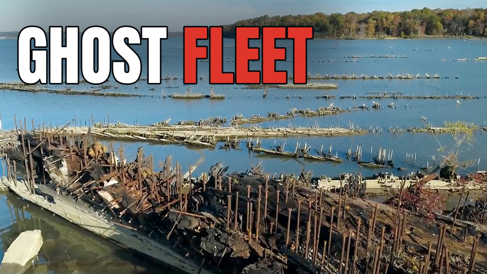
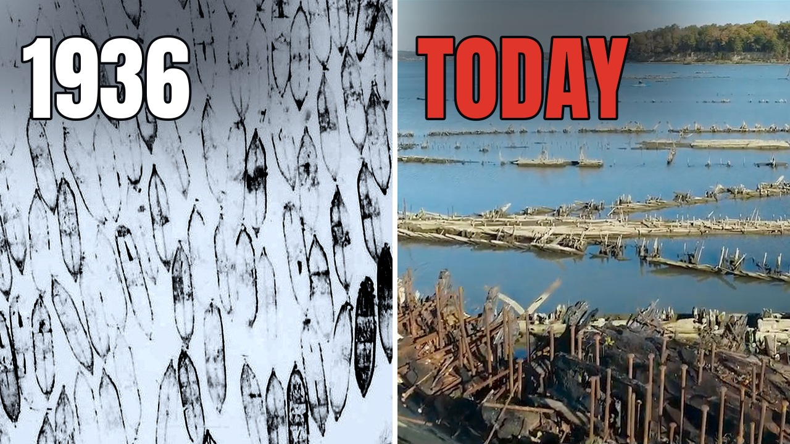
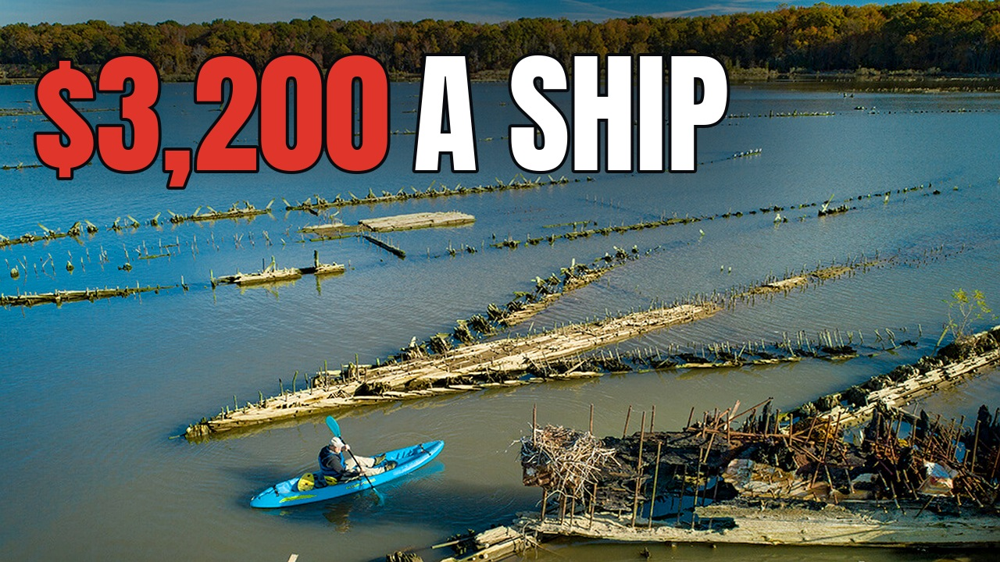

Video file: mallows_bay_full_v1.mp4 (14:14, 1080p) · Fleet's End video #2
1. Title
100+ Ships Are Rotting 30 Miles From the White House
Not scored in vidIQ yet (scoring costs credits: owner approval needed). Alternates for Test & Compare: “America Built a Fleet to Beat the U-Boats. Now It's Rotting in This Bay.” · “Why Nobody Could Get Rid of America's Ghost Fleet”. Rule: 3 titles scored ≥ 85 before publishing.
2. Thumbnails

V1, upload with this one V1_ghost_fleet.jpg

V2, Test & Compare V2_1936_today.jpg

V3, Test & Compare V3_3200_a_ship.jpg
Judge the Test & Compare winner on day 7–14, not day 1. Space this video ≥ 2 days from the Oriskany upload.
3. Upload settings
Setting
Value
Altered or synthetic content
YES (AI narration; maps and graphics made for this channel)
Made for kids
No
Category
Education
Language / caption language
English / English
License
Standard YouTube License
Chapters
Automatic from the timestamps in the description
End screen
The last 18 s are an end-screen map (right half clear): add “subscribe” + one “best for viewer” video
Comments
On. Post and pin the comment in section 6 right after publishing
4. Description (copy everything in the box)
About thirty miles from the White House, more than a hundred ships are rotting in the Potomac River. America built them to beat the U-boats in the First World War. Most were finished after the war was over, sold for about $3,200 apiece, set on fire, and dumped in a quiet bay in Maryland. A steel company, the Army and Congress all tried to get rid of them. So why are they still there?
Chapters
0:00 Hook
0:50 The Ghost Fleet
1:34 A Fleet of Wood
3:26 Too Late
5:06 Sold for Scrap
7:09 The Great Burn
8:58 One More War
11:27 Why They Stayed
Should we try to save what is left of the ghost fleet, or let the river finish the job? Tell us in the comments.
Credits
Archive photos: US National Archives (NARA: Signal Corps, Army Air Corps, American Unofficial Collection of WWI Photographs); Library of Congress (National Photo Company, Harris & Ewing, Bain News Service, WWI posters, Chronicling America newspapers: Evening Star, Paris Express). Public domain or no known restrictions.
Archive film: US National Archives (Our Bridge of Ships, US Signal Corps / CPI, 1918; U-35 submarine film, 1917; Ford Motor Company collection films, 1917-1927). Public domain. Clips marked ILLUSTRATIVE on screen are not the Mallows Bay ships.
Today's pictures: NOAA (Matt McIntosh, Will Sassorossi, David J. Ruck, K. Olson / NOAA Office of National Marine Sanctuaries); video: NOAA Office of National Marine Sanctuaries and DVIDS (US Department of Defense, Mallows Bay, Oct 2015); USGS / USDA NAIP aerial imagery. Public domain.
Maps: terrain and bathymetry from Mapzen / AWS Terrain Tiles (open data). The tow route, the yard dots, the hull shapes and the sanctuary outline on the maps are approximate.
Narration: AI voice (Kokoro TTS).
Sound effects: Epidemic Sound.
Music by Chris Zabriskie, from the album Music from Neptune Flux, licensed under Creative Commons Attribution 4.0:
"Stories About the World That Once Was"
"That Hopeful Future Is All I've Ever Known"
"Your Mother's Daughter"
"I Should Have Been More Human"
Sources: the National Register of Historic Places nomination for the Mallows Bay-Widewater district (2015); NOAA, the Federal Register designation rule and Final Environmental Impact Statement for the Mallows Bay-Potomac River National Marine Sanctuary (2019); US Shipping Board annual reports 1917-1923; the House hearing "Protecting America's Estuaries: The Potomac" (July 1970); Steinbraker v. Crouse (Court of Appeals of Maryland, 1936); the Evening Star (Washington), November 1925; Donald G. Shomette's research for Maryland DNR. Full source list on request.
#MallowsBay #GhostFleet #NavalHistory
5. Tags
Mallows Bay, ghost fleet, Mallows Bay ghost fleet, Potomac River shipwrecks, Mallows Bay Potomac River National Marine Sanctuary, WWI wooden ships, Emergency Fleet Corporation, US Shipping Board, wooden steamships, ship graveyard, shipwreck documentary, Maryland history, Washington DC history, abandoned ships, naval history, World War 1 ships, Bethlehem Steel, NOAA sanctuary
6. First comment (post it, then pin it)
A fleet built to beat the U-boats, sold for about $3,200 a ship, burned, and then protected by law. 🌊
What should happen to what is left of it?
🛶 Save it (keep it as it is, a sanctuary)
🌿 Let the river finish the job
Have you paddled through Mallows Bay? Tell us what you saw. Spotted a mistake? Reply with a source and we'll pin a correction.
7. Before you press Publish
☐
Watched the master once; names sound right (Nanjemoy, Accomac, Potomac, Widewater, Quantico, Idamont, PEPCO)
☐
3 titles scored ≥ 85 in vidIQ (ask before spending credits)
☐
“Altered or synthetic content” = Yes
☐
Thumbnail T1 uploaded; T2 + T3 added in Test & Compare